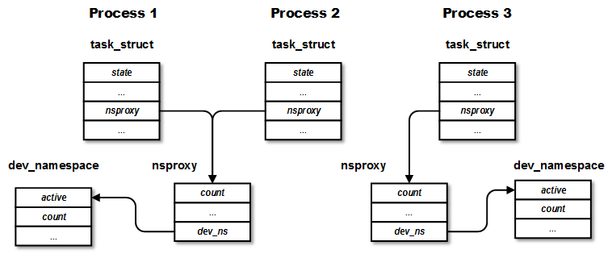
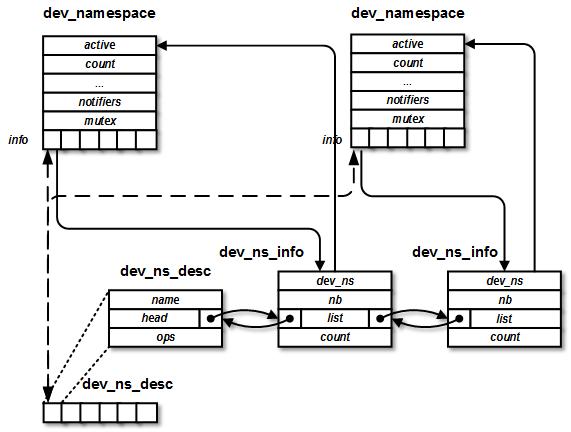
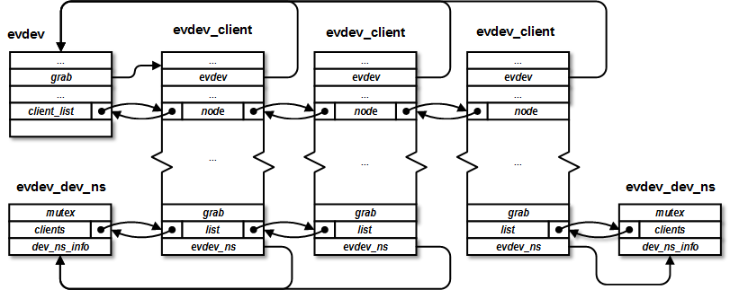
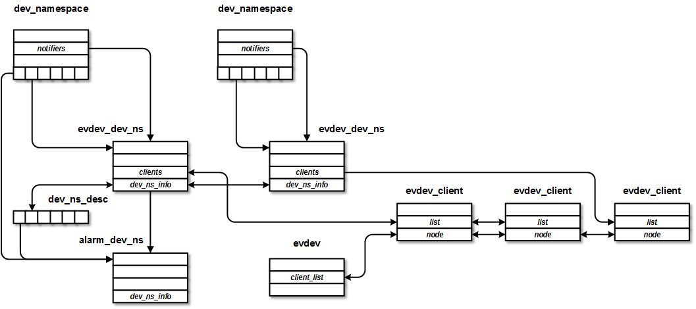

device namesapce
理解device namespace工作原理
参考文档
https://lwn.net/Articles/564854/
https://github.com/Cellrox/devns-patches/wiki
https://github.com/Cellrox/devns-patches
分立的patch，分析的好资料
https://github.com/Cellrox/devns-demo
https://github.com/ZengjfOS/cells-of-Android
实践参考代码
添加设备命令空间
nsproxy结构作为表示进程的结构task_struct的成员。对于一个进程，其nsproxy下的dev_ns代表了它所在的device namespace。nsproxy结构在同个namespace的进程间可以共享，但当这个nsproxy中的其中一个namespace被拷贝或取消共享，nsproxy就会被拷贝，变成所在进程私有。

设备名命空间架构
https://github.com/ZengjfOS/cells-of-Android
Device namespace简介 - 基于Kernel namespace的设备虚拟化
nsproxy结构体作为表示进程的结构task_struct的成员。也就是说，对于一个进程，其nsproxy下的dev_ns代表了它所在的device namespace。nsproxy结构在同个namespace的进程间可以共享，但当这个nsproxy中的其中一个namespace被拷贝或取消共享，nsproxy就会被拷贝，变成所在进程私有。
dev_namespace的初始值为init_dev_ns，它是代表init进程的device namespace。全局变量active_dev_ns指示现在active的device namespace。默认当然是init的device namespace。dev_ns_desc是系统中的全局数组，每个元素表示一个需要用device namespace的设备。
dev_ns_desc中的一个元素代表一个设备。相当于设备的全局注册表。这里的注册过程是线性搜索第一个空的位置，返回这个位置的index作为evdev_ns_id。这里，设备还没有被真正使用，所以相应的dev_ns_info结构也没有创建，因此元素head中的链表为空。
系统中的某一个进程打开了evdev子系统中的一个设备，然后evdev_open()-> evdev_ns_track_client(client)被调用。这个函数中创建evdev_dev_ns结构。前面提到过，每个需要使用device namespace的设备都要定义这个xxx_dev_ns结构。它是deivce driver与device namespace framework的桥梁。evdev_dev_ns中包含了dev_ns_info结构。每次打开evdev设备会创建一个evdev_client对象。所有同一个device namespace下的evdev_client被串到代表该device namespace中evdev设备的结构evdev_dev_ns的成员clients中。

edev设备
evdev_dev_ns中包含了dev_ns_info结构。每次打开evdev设备会创建一个evdev_client对象。所有同一个device namespace下的evdev_client被串到代表该device namespace中evdev设备的结构evdev_dev_ns的成员clients中。

示例整体架构
这个例子中，其中有两个device namespace，考虑两个设备evdev和alarm。evdev在在两个device namespace都有使用，其中一个device namespace中有两个client。alarm只在一个device namespace中使用。

namspace间binder通信
frameworks/native/libs/binder/ProcessState.cpp
#define OTHER_SYSTEM_CONTEXT_MGR_HANDLE 100000000
获取servicemanager
sp<IBinder> ProcessState::getInitContextObject(const sp<IBinder>& /*caller*/) { ALOGE("initservicemanager getInitContextObject \n"); return getStrongProxyForHandle(OTHER_SYSTEM_CONTEXT_MGR_HANDLE); }
kernel/drivers/staging/android/binder.c
#define INIT_CONTEXT_MGR_HANDLE 100000000
binder_transaction()
if(tr->target.handle == 0){ target_node = proc->binder_ns->context_mgr_node; if (target_node == NULL) { return_error = BR_DEAD_REPLY; goto err_no_context_mgr_node; } }else if (tr->target.handle == INIT_CONTEXT_MGR_HANDLE){ target_node = get_other_binder_ns_context_mgr_node(); if (target_node == NULL) { return_error = BR_DEAD_REPLY; goto err_no_context_mgr_node; } }else{ struct binder_ref *ref; ref = binder_get_ref(proc, tr->target.handle); if (ref == NULL) { binder_user_error("%d:%d got transaction to invalid handle\n", proc->pid, thread->pid); return_error = BR_FAILED_REPLY; goto err_invalid_target_handle; } target_node = ref->node; }
通过100000000这个handle可以获取到另外一个系统的servicemanager
devns-demo
https://github.com/Cellrox/devns-demo
The demo employs two device namespaces: the primary (root namespace) runs Android, and a secondary runs a program that displays the palette. Upon request, it switches to the secondary namespace, and then listens to input events to perform a switch back to the primary namespace.
This demo has 4 components:
devns: service that accepts and executes requests for namespace switch.
devns_init: init process of the secondary namespace, displays the palette.
devns_switch: a CLI utility to request a switch to secondary namespace.
DevnsDemo: an Android application to request a namespace switch via GUI.
内核参考源代码
可访问https://cs.android.com或https://github.com/aosp-mirror在线搜索及浏览AOSP源码。
代码对比工具，对比如下两份代码差异进行分析：
https://github.com/aosp-mirror/kernel_msm/tree/android-msm-angler-3.10-marshmallow-dr
https://github.com/ZengjfOS/cells-of-Android
或者直接看patch，但是版本需要注意:
https://github.com/Cellrox/devns-patches
https://github.com/Cellrox/android_kernel_msm/tree/freemium-hammerhead